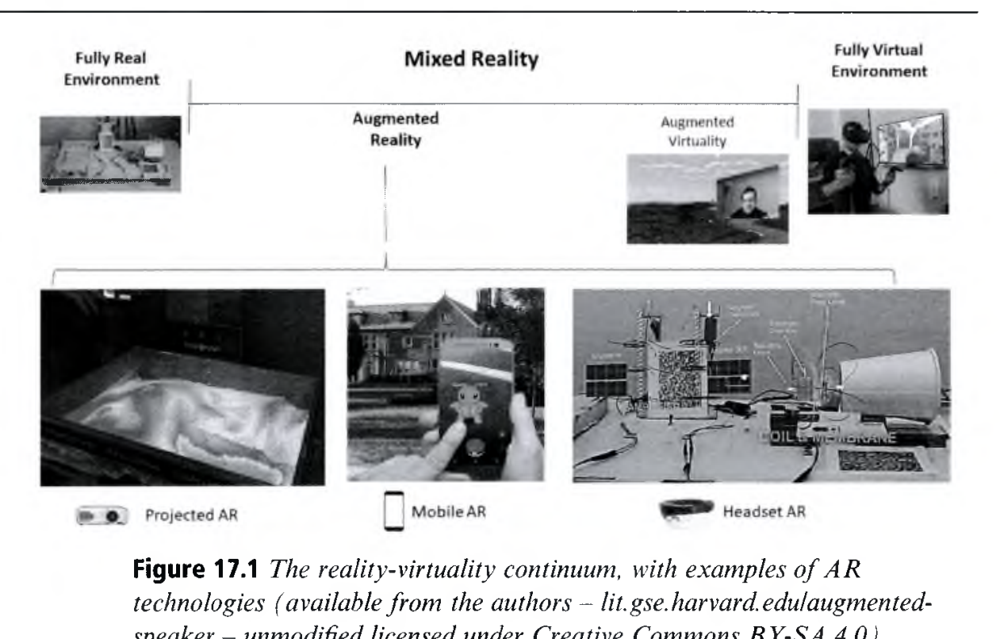
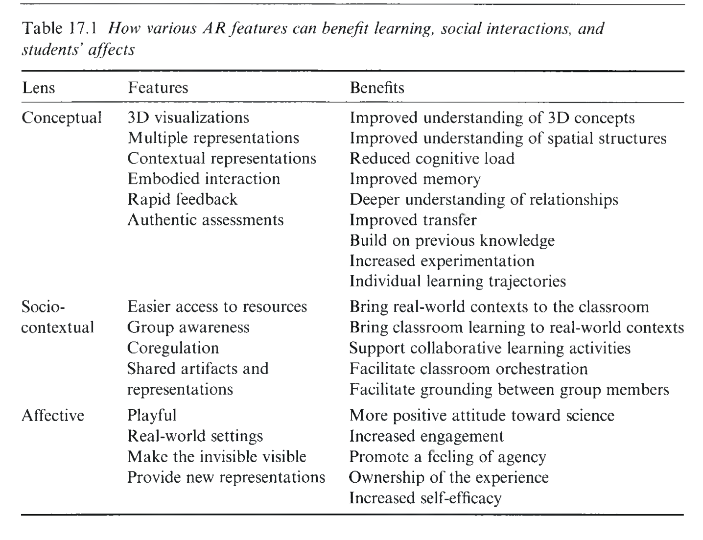
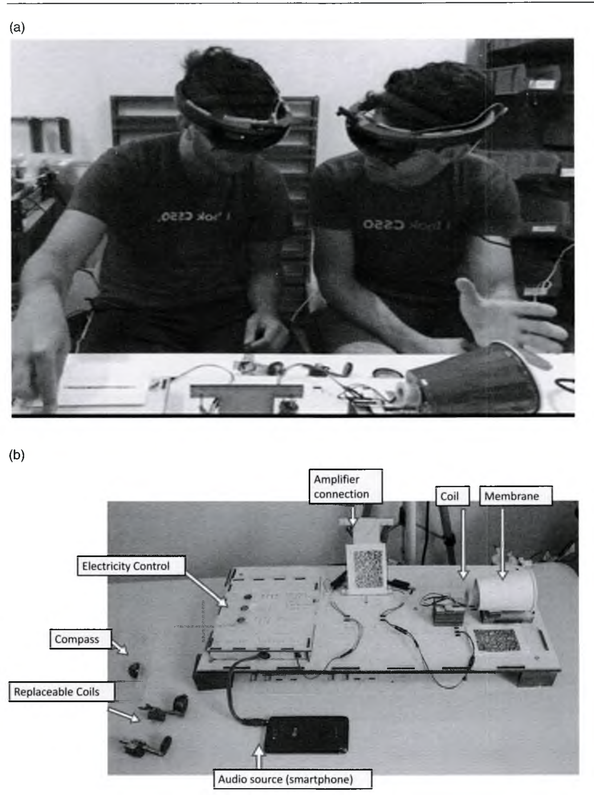
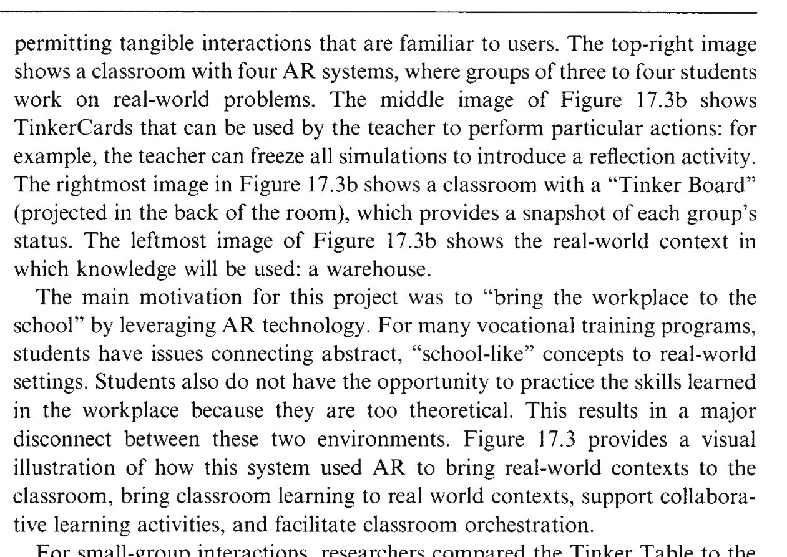
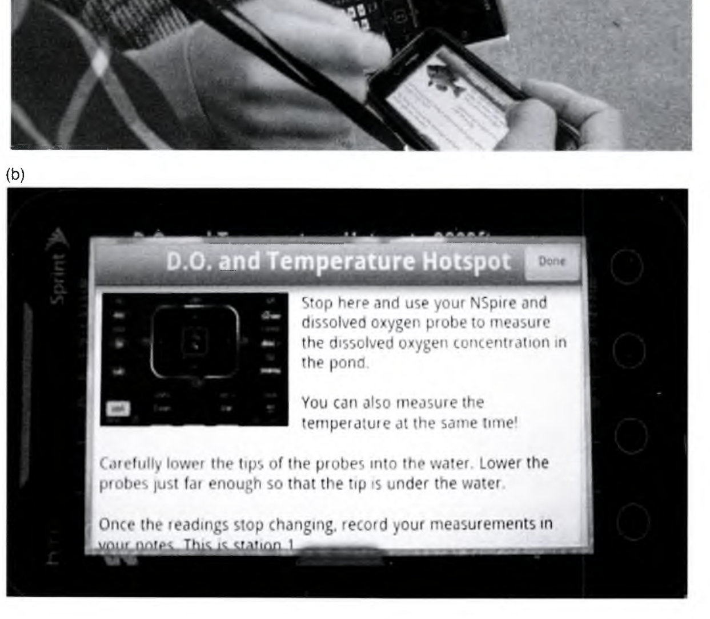

Augmented Reality in the Learning Sciences
증강현실과 학습과학: 현실과 가상의 융합, 비가시적 개념의 시각화, 그리고 교실 오케스트레이션
👥 저자 및 출처
Bertrand Schneider (Harvard University)
Iulian Radu (Harvard University)
The Cambridge Handbook of the Learning Sciences (3rd ed.), Chapter 17
🎯 챕터 핵심 아젠다
- 현실-가상 연속체: 물리 현실에 디지털 3D 정보를 정밀 정합하는 AR 기술
- 3대 이론적 렌즈: 개념적(비가시화), 사회·맥락적(공동 시각 기반), 정서적(몰입)
- 3대 랜드마크 사례: HoloSpeaker(물리), TinkerTable(물류), EcoMOBILE(생태)
- 교실 오케스트레이션: 교사의 수업 조율 및 인지 부하 관리 설계
🎯 강의 목표 및 핵심 맥락
증강현실(AR)이 단순한 시각적 효과를 넘어, 학생들의 개념 이해, 소집단 협력, 교사의 교실 조율을 어떻게 혁신하는지 학습과학적 3대 렌즈로 체계화합니다.
📖 원문 심층 학술 해설
하버드 대학교 베르트랑 슈나이더와 율리안 라두 교수는 "AR 기술 자체가 좋은 것도 나쁜 것도 아니며, 학습과학적 설계 원리와 결합될 때만 교육적 위력을 발휘한다"고 천명합니다.
💡 수업/세미나 진행 팁 & 질문 가이드
"완전 가상현실(VR)과 비교했을 때, 교실 수업에서 증강현실(AR)이 갖는 독보적 장점은 무엇일까요?"를 질문하세요.
현실-가상 연속체(Continuum)와 증강현실의 정의
밀그램과 키시노(Milgram & Kishino, 1994)의 혼합 현실(MR) 스펙트럼 (Figure 17.1)
📐 혼합 현실(MR) 스펙트럼의 위치
- 완전 물리 현실: 순수한 아날로그 교실 및 자연 환경
- 증강현실 (AR): 실제 환경을 보면서 디지털 3D 정보를 공간 정합(Spatial Overlay)
- 증강가상 (AV): 가상 공간 속에 실제 카메라 영상 투영
- 완전 가상현실 (VR): 외부 물리 세계와 완전히 차단된 몰입형 가상 공간

🎯 강의 목표 및 핵심 맥락
원서 Figure 17.1을 통해 물리 현실과 가상현실 사이의 스펙트럼에서 AR의 고유한 위치와 기술적 정의(Azuma, 1997)를 정립합니다.
📖 원문 심층 학술 해설
AR은 물리 세계를 지우지 않고 보존하기 때문에, 학생 간의 눈맞춤(Eye contact)과 교실 내 실제 교구 조작을 방해하지 않는 결정적 장점이 있습니다.
💡 수업/세미나 진행 팁 & 질문 가이드
포켓몬 고(Pokémon GO)의 대중적 성공 요인과 교육용 AR의 유사점을 비교해 보세요.
증강현실 시스템의 3대 기술 설계 차원
디스플레이, 트래킹, 인터랙션의 상호작용 아키텍처
1. 디스플레이 (Display)
- 스마트폰/태블릿: 휴대형 핸드헬드 AR
- 스마트 안경(HMD): 홀로렌즈 양손 자유형
- 프로젝터 (SAR): 책상/벽면 공간 투영
2. 트래킹 (Tracking)
- 마커 기반: QR/이미지 패턴 인식
- 마커리스(SLAM): 바닥·벽면 3D 공간 복원
- 위치/센서: GPS, 자이로, 나침반 결합
3. 인터랙션 (Interaction)
- 터치스크린: 2D 핀치 줌 및 탭
- 3D 제스처: 손가락 핀치 및 에어 탭
- 탠저블 교구: 실물 마커 블록 조작
🎯 강의 목표 및 핵심 맥락
AR 하드웨어와 소프트웨어를 구성하는 3대 설계 차원(Display, Tracking, Interaction)의 스펙트럼을 체계화합니다.
📖 원문 심층 학술 해설
스마트폰 기반 AR은 보급이 쉽지만 한 손을 써야 하는 제약이 있고, HMD는 몰입감과 양손 조작이 우수하지만 비용과 착용감이 과제입니다.
💡 수업/세미나 진행 팁 & 질문 가이드
교실 환경에서 태블릿 AR과 HMD 스마트 안경 중 어떤 방식이 더 현실적인지 토론하세요.
증강현실의 학습과학적 3대 분석 렌즈 (Table 17.1)
개념적 이해, 사회적 협력, 정서적 몰입을 견인하는 3대 메커니즘
🧠 1. 개념적 렌즈 (Conceptual Lens)
보이지 않는 미시 세계(자기장, 전류, 분자)를 시각화하고 공간적 인접성으로 인지 부하 감소
🤝 2. 사회·맥락적 렌즈 (Socio-Contextual Lens)
공동 시각적 기반(Shared Visual Ground)을 형성하여 동료 간 대화와 교사의 수업 조율 지원
🌿 3. 정서적 렌즈 (Affective Lens)
야외 생태계와 역사적 유적지 현장에서 장소 기반(Place-based) 탐구 몰입감 극대화

🎯 강의 목표 및 핵심 맥락
원서 Table 17.1을 기반으로 AR이 학습에 주는 3대 혜택(개념적, 사회적, 정서적)을 구조화합니다.
📖 원문 심층 학술 해설
단순히 신기한 기술(Novelty Effect)을 넘어, 인지적 부하 경감과 협력적 상호작용 촉진이라는 실질적 교육 효과 메커니즘을 밝힙니다.
💡 수업/세미나 진행 팁 & 질문 가이드
자신이 담당하는 교과에서 보이지 않아 가르치기 힘든 개념(예: 원자 결합, 전자기파)을 떠올려보세요.
비가시적 과학 원리의 가시화와 분할 주의 제거
마이어(Mayer)의 멀티미디어 원리와 공간적 인접성(Spatial Contiguity)
🚫 전통적 실험의 분할 주의 (Split-Attention)
- 물리적 실험 기구 ➔ 교과서 회로도 ➔ 오실로스코프 화면을 번갈아 쳐다봄
- 시선 전환 과정에서 시공간적 통합을 위한 작업기억 낭비(외재적 인지 부하)
✨ AR 기반 공간적 통합 오버레이
- 실제 회로 위에 전자의 이동 속도와 전압 차이가 색상/화살표로 직접 오버레이됨
- 지각과 추상 모델의 완벽한 1:1 매핑으로 개념적 이해도 40% 이상 향상 실증
🎯 강의 목표 및 핵심 맥락
AR이 어떻게 멀티미디어 학습 이론의 '공간적 인접성 원리'를 극대화하여 인지 부하를 줄이는지 설명합니다.
📖 원문 심층 학술 해설
전통적 실험에서 학생들은 눈앞의 물리 기구와 칠판의 수식을 연결하지 못해 좌절합니다. AR은 보이지 않는 힘과 장(Field)을 실물 위에 직접 투영합니다.
💡 수업/세미나 진행 팁 & 질문 가이드
물리 실험실에서 전기 회로를 조립할 때 AR 안내선이 주는 인지적 비계 효과를 토론하세요.
홀로스피커(HoloSpeaker): 전자기장과 음파 3D 시각화
율리안 라두 & 베르트랑 슈나이더(Radu & Schneider, 2019)의 HMD AR 시스템 (Figure 17.2)
🔊 시스템 메커니즘 및 학습 효과
- 실물 조작: 실제 스마트폰에 연결된 분해 가능한 스피커 교구
- AR 오버레이: 영구자석 주위의 자기장 선, 코일에 흐르는 전류의 방향, 공기 입자의 압축-팽창 종파(음파) 3D 렌더링
- 실증 결과: 2D 비디오나 교과서 학습 집단 대비 전자기 유도와 파동 전파 메커니즘의 인과적 추론 점수 대폭 상승

🎯 강의 목표 및 핵심 맥락
원서 Figure 17.2의 홀로스피커(HoloSpeaker) 사례를 통해 개념적 렌즈가 실제 물리 교육에 구현된 전형을 분석합니다.
📖 원문 심층 학술 해설
학생들은 스피커 진동판이 떨릴 때 공기 분자들이 어떻게 밀려나고 소리가 전달되는지 온몸으로 직관화할 수 있습니다.
💡 수업/세미나 진행 팁 & 질문 가이드
중·고등학교 전자기 단원에서 학생들이 가장 헷갈려하는 플레밍의 왼손 법칙을 AR로 어떻게 가르칠지 논의하세요.
공동 시각적 기반(Shared Ground)과 소집단 협력 증진
서로의 시선과 조작을 실시간으로 확인하며 형성되는 상호주관성
👀 1. 지시어의 명료화 (Deictic Reference)
- "저기 빨간색으로 흐르는 전류 봐봐"처럼 가상 객체를 손가락으로 가리키며(Pointing) 대화 가능
- 모호한 언어적 설명에 드는 소통 비용(Grounding Cost)을 극적으로 절감
🤝 2. 대등한 참여와 공동 문제 해결
- 동일한 3D 홀로그램을 여러 각도에서 동시에 관찰하며 다양한 관점(Perspective) 공유
- 특정 학생의 화면 독점을 방지하고 소집단 전원의 능동적 참여 유도
🎯 강의 목표 및 핵심 맥락
AR이 소집단 협력 학습(CSCL)에서 의사소통의 '공동 기반(Grounding)'을 어떻게 강화하는지 다룹니다.
📖 원문 심층 학술 해설
클라크와 브레넌(Clark & Brennan, 1991)의 담화 이론: 공동의 시각적 대상이 존재할 때 대화의 오류가 줄어들고 협력적 지식 구축이 가속화됩니다.
💡 수업/세미나 진행 팁 & 질문 가이드
줌(Zoom) 화면 공유와 AR 공동 시각 공간의 질적인 협업 상호작용 차이를 비교해 보세요.
팅커 테이블(TinkerTable): 물류 창고 설계와 직업 교육
피에르 딜렌부르(Pierre Dillenbourg, EPFL)의 탠저블 AR 테이블탑 (Figure 17.3)
📦 시스템 아키텍처 및 교육 효과
- 대상: 스위스 직업학교 물류 창고 관리 견습생들
- 인터랙션: 테이블 위에 소형 미니어처 선반 블록을 손으로 배치하면, 천장 프로젝터가 지게차 이동 동선, 병목 구간, 안전사고 위험도를 실시간 시뮬레이션
- 직업적 숙련도: 창고 공간 최적화와 동선 효율화 역량을 놀이처럼 체득

🎯 강의 목표 및 핵심 맥락
원서 Figure 17.3의 팅커 테이블(TinkerTable) 사례를 통해 직업 교육 및 복합 시스템 설계에 적용된 탠저블 AR을 분석합니다.
📖 원문 심층 학술 해설
손으로 만지는 물리 블록과 컴퓨터의 즉각적 물리/물류 시뮬레이션이 결합되어 직관적 시행착오와 반성적 토론을 자극합니다.
💡 수업/세미나 진행 팁 & 질문 가이드
도시 계획, 건축 설계, 공장 자동화 교육에 팅커 테이블을 응용하는 방안을 논의하세요.
교사의 실시간 오케스트레이션(Orchestration) 지원
스마트 글래스를 착용한 교사가 교실 전체 소집단의 학습 상태를 실시간 진단
📊 실시간 상태 모니터링
교사가 모둠을 바라보면 각 팀 머리 위에 진도율, 오답률, 토론 참여도 아이콘이 AR로 표시됨
🚨 위기 모둠 선제적 개입
헛바퀴를 돌거나(Wheel-spinning) 침묵에 빠진 고착 모둠을 즉각 식별하여 맞춤형 비계 투입
⏱️ 교실 시간 관리
전체 활동 남은 시간과 다음 단계 전환 알림을 교사의 시야에 조용히 제시하여 흐름 유지
🎯 강의 목표 및 핵심 맥락
AR이 학생뿐 아니라 교사의 다중 모둠 수업 통제(Classroom Orchestration)를 돕는 혁신적 도구임을 설명합니다.
📖 원문 심층 학술 해설
딜렌부르의 '교실 오케스트레이션' 개념: 30명의 학생이 모둠 활동을 할 때 교사는 극심한 인지 부하를 겪습니다. AR 대시보드는 교사의 주의 분배를 최적화합니다.
💡 수업/세미나 진행 팁 & 질문 가이드
교사용 스마트 안경이 교실에 도입될 때 발생할 수 있는 교사-학생 관계의 윤리적 쟁점을 토론하세요.
정서적 렌즈: 장소 기반 증강현실과 야외 생태 탐구
실제 연못, 숲, 역사 유적지를 무대로 펼쳐지는 위치 기반(Location-based) 탐구
🌿 장소 기반 학습 (Place-Based Learning)
- 박제된 교실을 벗어나 실제 연못가에 서서 GPS 기반 AR 모바일 기기 구동
- "내가 서 있는 바로 이 물속의 용존산소량과 수중 생태계"를 직접 조사하는 강력한 진정성(Authenticity)
🎭 정서적 몰입과 환경 감수성
- 가상의 생태학자 캐릭터로부터 미션을 부여받는 참여형 롤플레잉(Participatory Simulation)
- 환경 오염의 심각성을 현장에서 체감하며 생태 시민성 형성
🎯 강의 목표 및 핵심 맥락
AR이 장소 기반 학습과 결합하여 학생들의 환경 감수성과 과학 탐구 동기를 어떻게 고취하는지 다룹니다.
📖 원문 심층 학술 해설
교과서 속 가상의 호수가 아닌, 우리 동네 하천에서 환경 데이터를 수집할 때 학습의 의미 구성(Sense-making)이 극대화됩니다.
💡 수업/세미나 진행 팁 & 질문 가이드
우리 학교 주변의 지리적/역사적 공간을 활용한 야외 AR 탐구 수업을 구상해 보세요.
에코모바일(EcoMOBILE): 연못 생태계 수질 센서 융합 탐구
크리스 데디(Chris Dede, Harvard)의 스마트폰 AR 야외 과학 탐구 (Figure 17.4)
🔬 시스템 구성 및 탐구 프로세스
- 위치 기반 AR 퀘스트: 스마트폰으로 연못 주변 핫스팟(Hotspot)에 도착하면 가상 생태계 데이터 언락
- 물리적 센서 융합: 버니어(Vernier) 수질 센서를 연못에 담가 실제 용존산소량(DO)과 pH 측정
- 3D 가상 시각화: 물속 미생물의 호흡과 광합성 과정을 3D 애니메이션으로 오버레이

🎯 강의 목표 및 핵심 맥락
원서 Figure 17.4의 에코모바일(EcoMOBILE) 프로젝트를 통해 모바일 AR과 물리 센서가 결합된 최고의 야외 생태 탐구 모델을 분석합니다.
📖 원문 심층 학술 해설
데디 교수 연구팀은 실내 가상 생태계(EcoMUVE)와 야외 AR(EcoMOBILE)을 교차 연계하여 학생들의 복잡계 인과 추론 능력을 비약적으로 향상시켰습니다.
💡 수업/세미나 진행 팁 & 질문 가이드
야외 스마트폰 탐구 시 안전사고 예방과 학생 주의 분산 방지 대책을 함께 논의하세요.
AR 설계의 함정: 인지 과부하와 터널 비전(Tunnel Vision)
화려한 그래픽의 역효과를 방지하는 학습과학적 설계 수칙
⚠️ AR의 주요 부작용
- 시각적 과밀(Visual Clutter): 화면에 너무 많은 텍스트와 3D 효과가 떠서 핵심 정보 차단
- 터널 비전 (Tunnel Vision): 스마트폰 화면만 쳐다보느라 주변 실제 환경과 동료를 보지 못함
- 신기 효과 (Novelty Effect): 기술의 신기함에만 흥분하고 실제 학습에는 집중하지 못함
🛡️ 학습과학적 처방
- 최소주의 정보 표시: 결정적 순간에만 필요한 비계 힌트 노출
- 화면 밖 상호작용 강제: 동료와 토론하거나 실물을 조작해야만 다음 단계로 진행
- 교사의 사전 브리핑 & 사후 디브리핑 필수 결합
🎯 강의 목표 및 핵심 맥락
AR을 잘못 설계했을 때 발생하는 인지 과부하와 주의 분산 현상을 짚고, 이를 방지하는 가이드라인을 제시합니다.
📖 원문 심층 학술 해설
라두(Radu, 2014)의 메타분석: AR 환경에서 인터페이스가 조잡하면 오히려 일반 교과서보다 학업 성취도가 떨어질 수 있음을 경고했습니다.
💡 수업/세미나 진행 팁 & 질문 가이드
스마트폰 화면을 보느라 실제 자연을 보지 못하는 '스마트폰 맹시' 현상을 방지할 수업 규칙을 설계해 보세요.
AR 기반 알고리즘 시각화 및 공간 컴퓨팅 코딩
3차원 공간에서 데이터 구조와 로봇 제어 코드를 증강 시각화
💻 알고리즘 3D 공간 시각화
- 트리 및 그래프 순회: 2D 종이가 아닌 교실 공간에 3D 바이너리 트리를 띄우고 노드를 탐색
- 스택과 큐 (Stack & Queue): 데이터가 쌓이고 빠져나가는 과정을 실제 상자 위에 3D 애니메이션으로 오버레이
🤖 증강 로보틱스 (Augmented Robotics)
- 로봇이 주행할 경로와 센서 감지 범위를 바닥에 AR로 실시간 투영
- 자율주행 코딩의 디버깅 과정을 직관적으로 지원
🎯 강의 목표 및 핵심 맥락
증강현실 기술을 컴퓨터 프로그래밍 및 자료구조 알고리즘 교육에 접목한 최신 응용 사례를 소개합니다.
📖 원문 심층 학술 해설
공간 컴퓨팅(Spatial Computing) 시대에는 코딩 결과물이 모니터 밖 3차원 물리 공간과 상호작용하므로 AR 기반 시각화가 필수적입니다.
💡 수업/세미나 진행 팁 & 질문 가이드
학생들이 엔트리나 스크래치에서 AR 카메라 블록을 활용해 인터랙티브 콘텐츠를 제작하는 프로젝트를 논의하세요.
증강현실이 재정의하는 미래 교실의 3대 가치
학습과학자가 기억해야 할 증강현실의 3대 핵심 명제
비가시적 세계의 개방
보이지 않는 미시적 물리·생물 법칙을 실물 위에 3D로 시각화하여 개념적 돌파구 제공
공동 시각 기반 형성
물리 현실을 지우지 않고 보존하여 학생 간 대화와 교사의 실시간 수업 오케스트레이션 지원
장소와 배움의 결합
교실 밖 실제 연못과 역사 유적지를 가장 생생한 진정성 있는 탐구 실험실로 변환
🎯 강의 목표 및 핵심 맥락
Chapter 17의 핵심 교훈을 3대 축(비가시화, 공동 기반, 장소성)으로 압축 정리합니다.
📖 원문 심층 학술 해설
증강현실은 가상에 몰입하여 현실을 잊는 기술이 아니라, '현실 세계를 더욱 깊고 풍성하게 이해하게 만드는 증강 렌즈'입니다.
💡 수업/세미나 진행 팁 & 질문 가이드
"여러분의 교실에 AR 스마트 안경이 보급된다면 가장 먼저 시도하고 싶은 수업은 무엇인가요?"
다음 여정: Chapter 18 모바일 러닝 (Mobile Learning)
체치-체 룽(Chee-Kit Looi) 교수의 무봉제(Seamless) 모바일 학습 패러다임
🔬 Ch 17 vs Ch 18 연계성
- Ch 17 증강현실(AR): 공간 정합 정보와 비가시적 개념 시각화에 집중된 몰입형 인터페이스
- Ch 18 모바일 러닝: 1인 1디바이스를 통해 학교와 가정, 교실과 야외를 끊김 없이 연결하는 무봉제 학습(Seamless Learning) 10대 차원
🚀 Part III 테크놀로지의 피날레
게임(14) ➔ 체화설계(15) ➔ 탠저블(16) ➔ 증강현실(17) ➔ 모바일러닝(18)으로 완성되는 첨단 학습 환경
🎯 강의 목표 및 핵심 맥락
Chapter 17을 마무리하고, Part III의 마지막 장인 Chapter 18(Mobile Learning)과의 연계성을 제시합니다.
📖 원문 심층 학술 해설
싱가포르 국립교육원(NIE) 루이 치킷 교수의 1:1 모바일 무봉제 학습 연구로 이어집니다.
💡 수업/세미나 진행 팁 & 질문 가이드
다음 Chapter 18을 기대하며 본 강의 슬라이드를 마칩니다.